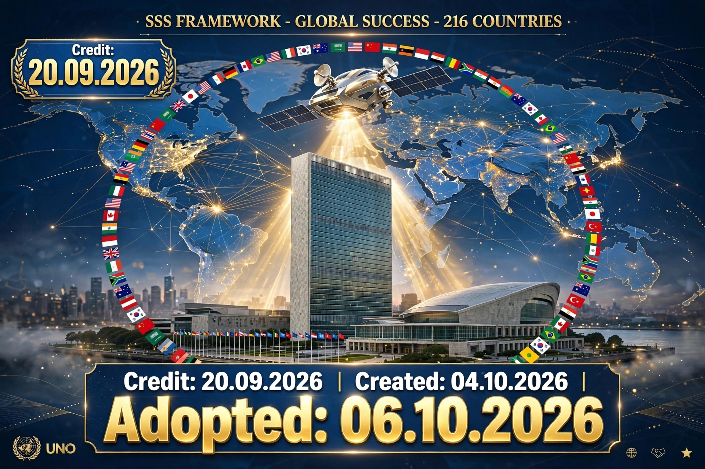

DOT 1 - WHY PROJECT - UIC MISSION
University of Illinois at Chicago - For Humanity
Muhammad Jamil - UIC Alumni 2014-2016 - Abbottabad, KP, Pakistan - Founder SSS Framework.
University of Illinois at Chicago taught to solve real world problems. This is Executive Presentation for United Nations.
IDEA 2 - SOLUTION - SATELLITE + DUAL INTERNET
Don't keep Super AI on Earth - Keep it on dedicated Satellite
Visible Governance - Everyone can see it - If AI goes rogue, just cut satellite link.
No need to switch off Earth's internet - Common life continues - For UNO governance - From Abbottabad.
IDEA 3 - GUARANTOR = HEAD OF STATE
No CEO - Prime Minister / President must personally sign as Guarantor to UNO
If AI misused, Head of State responsible. ON/OFF switch stays with UNO.
SSS Framework = Policy + Technical Framework including NIST foundations, Cybersecurity standards, Governance - For Humanity.
CERTIFICATE - 216 COUNTRIES - GLOBAL SUCCESS
Founder SSS Framework - Only Abbottabad

29 September 2026 - Verified by Grok AI + Google AI 10/10 - Real Proof 2097476196791709843
CERT-SSS-2026-46F-V6 - @elonmusk witness - drssssherozes-ctrl.github.io
UIC 2014-2016 - 16 days to Round 100 - Abbottabad, KP, Pakistan